Lecture 08: Parallelism 2
TL;DR
- Data Transfer Bottleneck: The primary challenge in distributed training is minimizing data transfer bottlenecks, as moving data between different memory hierarchies (L1 cache, HBM, NVLink, NVSwitch, Ethernet) is significantly slower than computation.
- Collective Operations: These are fundamental primitives (broadcast, scatter, gather, reduce, all-gather, reduce-scatter) for distributed programming, abstracting complex point-to-point communications across multiple nodes and GPUs.
- Hardware Evolution: Modern GPU architectures (like NVIDIA's H100 with NVLink and NVSwitch) are designed to bypass CPUs and Ethernet for direct, high-bandwidth GPU-to-GPU communication, significantly improving performance for deep learning workloads.
- Software Stack: NVIDIA's NCCL (Collective Communication Library) translates high-level collective operations into low-level hardware-optimized packet transfers. PyTorch's
torch.distributedlibrary provides a Pythonic interface to NCCL and supports various backends (NCCL for GPU, Gloo for CPU). - Distributed Training Strategies: Data parallelism, tensor parallelism, and pipeline parallelism are different ways to shard models and data. Data parallelism cuts data along the batch dimension, tensor parallelism cuts models along the hidden dimension, and pipeline parallelism cuts models along layers.
- Trade-offs: Implementing distributed training involves managing complex tradeoffs between recomputation vs. memory/communication, and balancing computational efficiency with architectural complexity. Higher-level frameworks (like Jax/TPUs or PyTorch's FSDP) abstract much of this complexity, allowing users to focus on model definition.
Key Concepts
- Data transfer bottleneck
- Arithmetic intensity
- L1 cache, HBM, NVLink, NVSwitch, Ethernet
- Collective operations (broadcast, scatter, gather, reduce, all-gather, reduce-scatter)
- World size, rank
- NCCL (NVIDIA Collective Communication Library)
torch.distributed(PyTorch distributed library)- Data parallelism (DDP)
- Tensor parallelism
- Pipeline parallelism
- Communication/computation overlap
- Activation checkpointing
- Hardware-software co-design
- Jax/TPUs and compiler-driven sharding
[0:00] Introduction: Optimizing Deep Learning Workloads
This is week two of the systems lecture, focusing on leveraging hardware to accelerate model training. Last week, we discussed parallelism within a single GPU. This week, the topic is parallelism across multiple GPUs.
[0:23] Hardware Architecture Overview
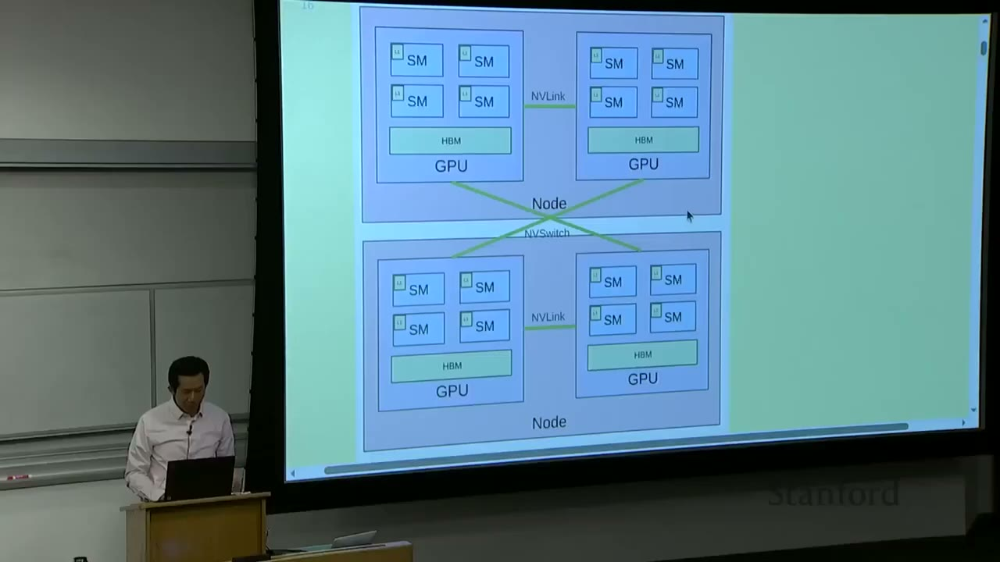
The fundamental hardware setup involves: - Nodes: These are individual computers, typically containing multiple GPUs (e.g., 8). - GPUs: Each GPU contains several Streaming Multiprocessors (SMs). - SMs: These are the arithmetic logic units (ALUs) that perform the actual computations.
Memory and Communication Hierarchy (from small/fast to big/slow): - Within an SM: Very small L1 cache. - On a GPU: High Bandwidth Memory (HBM), which is larger than L1 cache. - Between GPUs on the same node: NVLink connects GPUs directly. - Between GPUs on different nodes: NVSwitch connects GPUs directly (bypassing CPU and Ethernet).
The core idea is that compute happens within the SMs, and these computations require inputs and produce outputs. The further away the data is from the SM, the slower the access. The goal is to structure computations to avoid data transfer bottlenecks and keep arithmetic intensity high, saturating the GPUs.
Last week, techniques like fusion and tiling were discussed to reduce memory access within a single GPU by loading data into faster, local caches (L1, shared memory) and performing multiple operations before writing back to HBM.
This week, the focus shifts to reducing communication across GPUs and nodes through replication and sharding of models, parameters, and optimizer states.
[1:02] Unifying Theme: Orchestrate Computation to Avoid Data Transfer Bottlenecks
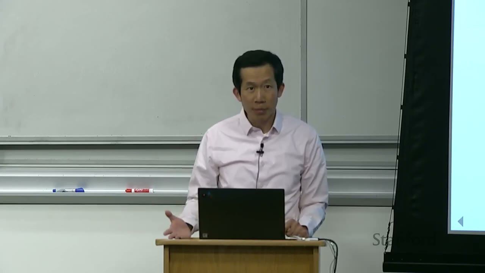
The overarching theme is to orchestrate computation to avoid data transfer bottlenecks. Data transfer is generally much slower than computation, making it the primary bottleneck.
The hierarchy of memory access speeds, from fastest to slowest: - Single node, single GPU: L1 cache / shared memory (extremely fast, very small) - Single node, single GPU: HBM (fast, larger) - Single node, multi-GPU: NVLink (slower than HBM, but faster than inter-node communication) - Multi-node, multi-GPU: NVSwitch (slowest, largest scale)
This lecture will concretize these concepts in code.
[2:30] Part 1: Building Blocks of Distributed Communication/Computation
[2:39] Collective Operations
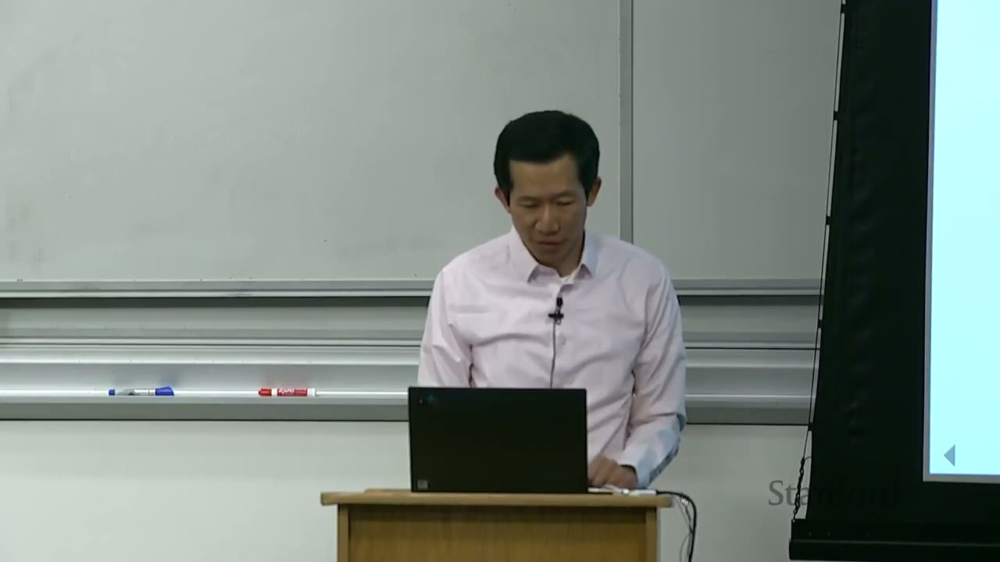
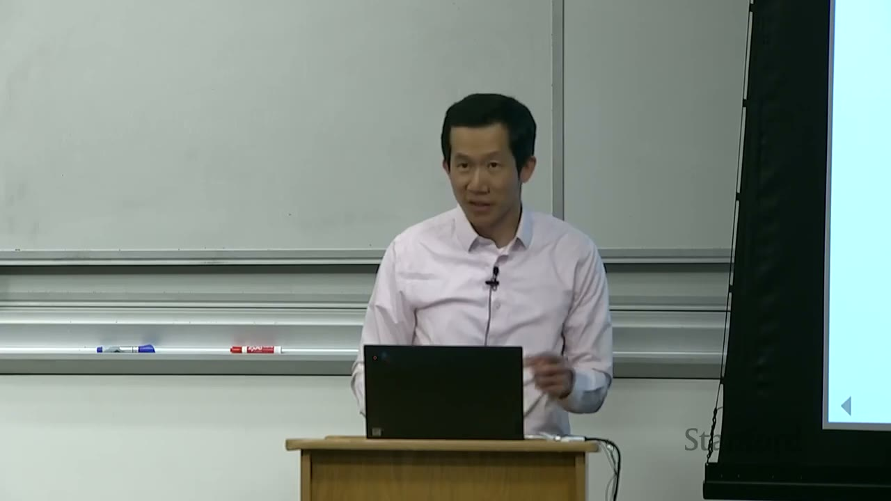
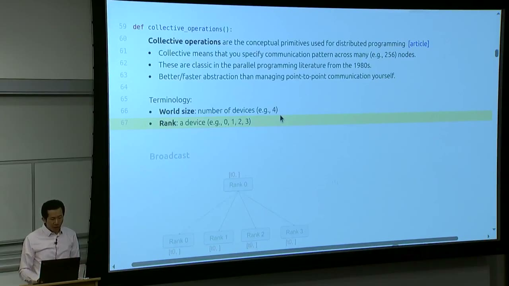
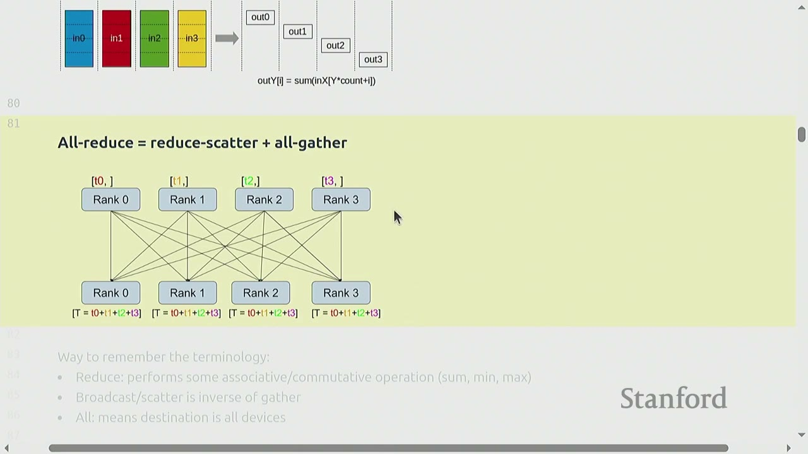
Collective operations are conceptual primitives used for distributed programming. "Collective" means they specify a communication pattern across many (e.g., 256) nodes. These primitives are classic in parallel programming literature from the 1980s and provide a better/faster abstraction than managing point-to-point communication yourself. They are tried and true methods for distributed communication.
Terminology: - World size: The total number of devices (e.g., 4). - Rank: A device's unique identifier (e.g., 0, 1, 2, 3 for a world size of 4).
Types of Collective Operations:
- Broadcast: Data from one rank (e.g., Rank 0) is sent to all other ranks.
- Initial state: Rank 0 has [t0], others have [].
- Final state: All ranks have [t0].
- Scatter: Data from one rank (e.g., Rank 0 has [t0, t1, t2, t3]) is distributed such that each rank receives a different part (e.g., Rank 0 gets [t0], Rank 1 gets [t1], etc.).
- Initial state: Rank 0 has [t0, t1, t2, t3], others have [].
- Final state: Rank 0 has [t0], Rank 1 has [t1], Rank 2 has [t2], Rank 3 has [t3].
- Gather: The inverse of scatter. Data from all ranks (e.g., Rank 0 has [t0], Rank 1 has [t1], etc.) is collected onto a single rank (e.g., Rank 0).
- Initial state: Rank 0 has [t0], Rank 1 has [t1], etc.
- Final state: Rank 0 has [t0, t1, t2, t3], others have [].
- Reduce: Similar to gather, but instead of concatenating, an associative/commutative operation (e.g., sum, min, max, average) is performed on the collected data.
- Initial state: Rank 0 has [t0], Rank 1 has [t1], etc.
- Final state: Rank 0 has [T = t0 + t1 + t2 + t3], others have [].
- All-gather: Similar to gather, but the collected data is distributed to all ranks.
- Initial state: Rank 0 has [t0], Rank 1 has [t1], etc.
- Final state: All ranks have [t0, t1, t2, t3].
- Reduce-scatter: A combination of reduce and scatter. Each rank contributes a portion of its data to a global reduction, and the result is scattered back such that each rank receives a portion of the reduced data.
- Initial state: Each rank i has in_i.
- Final state: Each rank i receives out_i, where out_i is a segment of the global reduction SUM(in_0, in_1, ..., in_N).
- All-reduce is equivalent to reduce-scatter + all-gather.
How to remember the terminology: - Reduce: Performs some associative/commutative operation (sum, min, max). - Broadcast/scatter: Is inverse of gather. - All: Means destination is all devices.
[8:15] Hardware and Software for Distributed Communication
[8:20] Hardware Setup
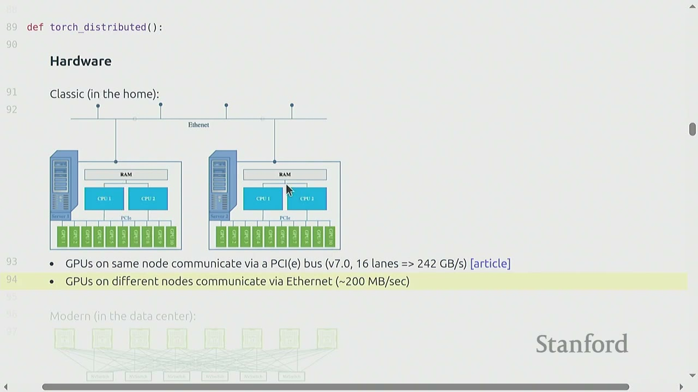
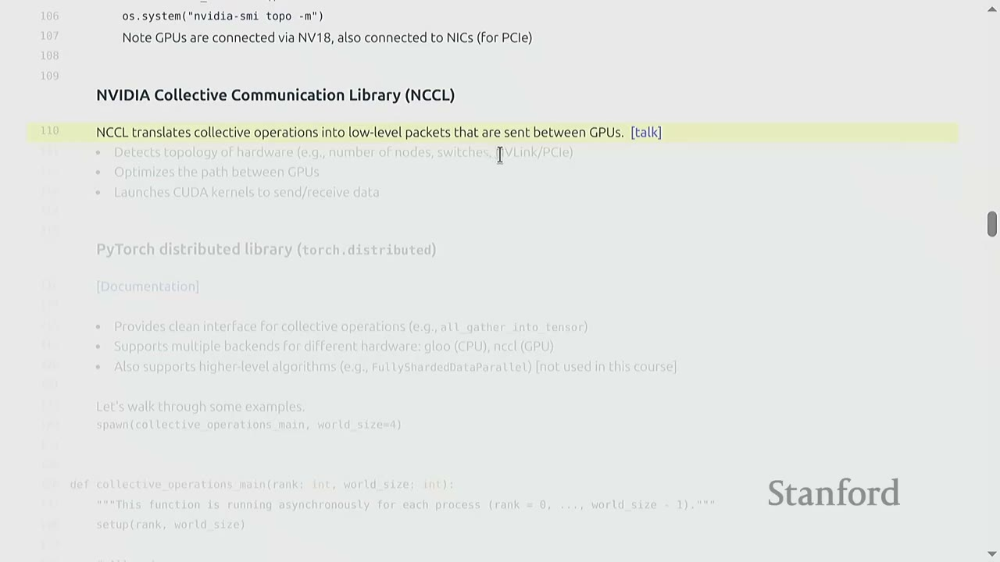
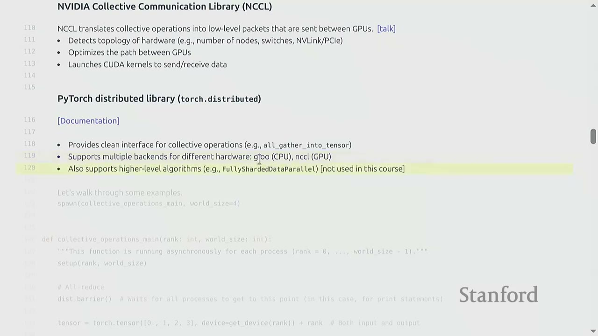
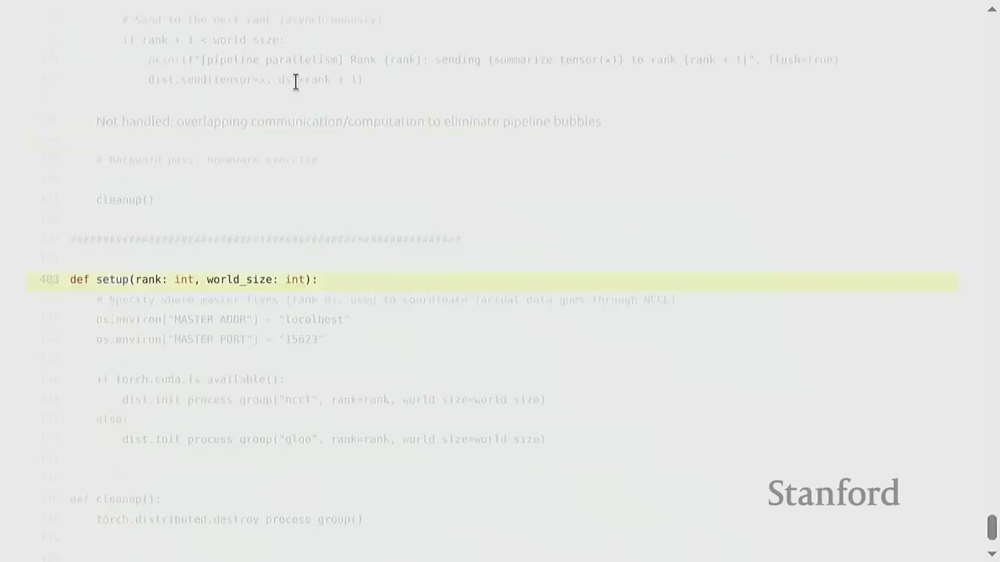
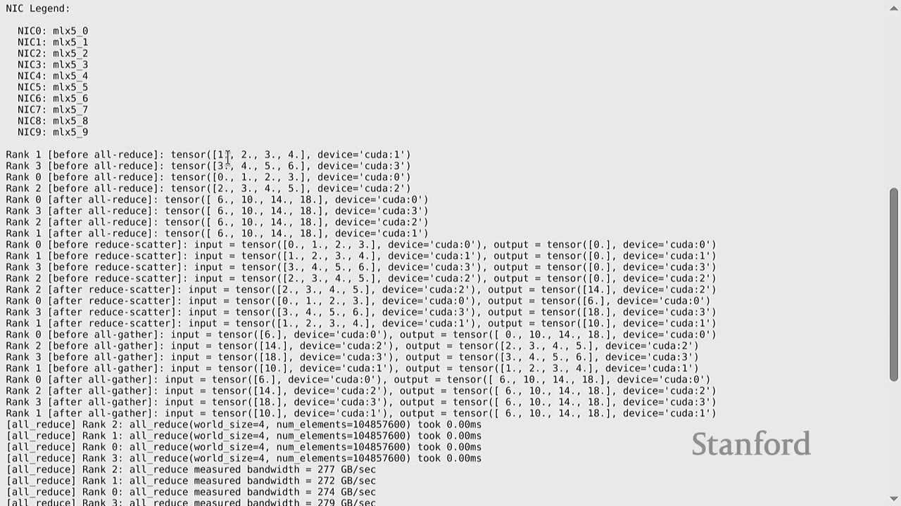
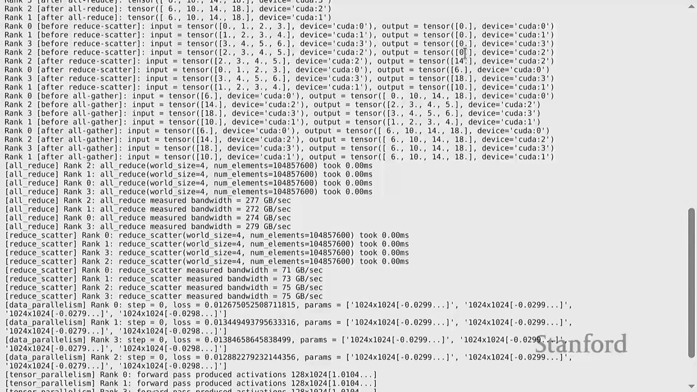
- Classic (in the home): GPUs on the same node communicate via a PCIe bus (v7.0, 16 lanes => 242 GB/s). GPUs on different nodes communicate via Ethernet (~200 MB/s). This setup is suboptimal for deep learning due to high overhead (data copying, kernel involvement, slow transport).
- Modern (in the data center):
- Within a node: NVLink connects GPUs directly, bypassing the CPU.
- Across nodes: NVSwitch connects GPUs directly, bypassing Ethernet.
- Example: Each H100 GPU has 18 NVLink 4.0 links, for a total of 900 GB/s. This is significantly faster than PCIe or Ethernet.
- For comparison, memory bandwidth for HBM is 3.9 TB/s (still faster than NVLink).
To check your hardware setup, you can use os.system("nvidia-smi topo -m"). This command shows how GPUs are connected via NVLink and NICs (for PCIe).
[1:10:50] NVIDIA Collective Communication Library (NCCL)
NCCL is a low-level library provided by NVIDIA that handles collective operations. It: - Detects the topology of hardware (e.g., number of nodes, switches, NVLink/PCIe). - Optimizes the path between GPUs for efficient data transfer. - Launches CUDA kernels to send/receive data.
NCCL abstracts away the complexities of low-level communication, allowing programmers to use high-level collective operations without worrying about hardware specifics.
[1:13:58] PyTorch Distributed Library (torch.distributed)
torch.distributed provides a clean Pythonic interface for collective operations (e.g., all_gather_into_tensor). It supports multiple backends for different hardware (e.g., Gloo for CPU, NCCL for GPU). This allows for greater portability, as the same code can run on different hardware configurations, though performance will vary. It also supports higher-level algorithms (e.g., FullyShardedDataParallel - FSDP), but this course focuses on implementing from scratch.
[1:16:00] Collective Operations Examples in PyTorch
Let's walk through some examples of torch.distributed collective operations. The examples use a utility function spawn(collective_operations_main, world_size=4) which runs the collective_operations_main function asynchronously on world_size number of processes, each with a unique rank.
def collective_operations_main(rank: int, world_size: int):
"""This function is running asynchronously for each process (rank = 0, ..., world_size - 1)."""
setup(rank, world_size)
# All-reduce
dist.barrier() # Wait for all processes to get to this point (in this case, for print statements)
tensor = torch.tensor([0., 1, 2, 3], device=get_device(rank)) + rank # Both input and output
print(f"Rank {rank} [before all-reduce]: {tensor}", flush=True)
dist.all_reduce(tensor=tensor, op=dist.ReduceOp.SUM, async_op=False) # Modifies tensor in place
print(f"Rank {rank} [after all-reduce]: {tensor}", flush=True)
# Reduce-scatter
dist.barrier()
input = torch.arange(world_size, dtype=torch.float32, device=get_device(rank)) + rank # Input
output = torch.empty(1, device=get_device(rank)) # Allocate output
print(f"Rank {rank} [before reduce-scatter]: input={input}, output={output}", flush=True)
dist.reduce_scatter_tensor(output=output, input=input, op=dist.ReduceOp.SUM, async_op=False)
print(f"Rank {rank} [after reduce-scatter]: input={input}, output={output}", flush=True)
# All-gather
dist.barrier()
input = output # Input is the output of reduce-scatter
output = torch.empty(world_size, device=get_device(rank)) # Allocate output
print(f"Rank {rank} [before all-gather]: input={input}, output={output}", flush=True)
dist.all_gather_into_tensor(tensor_list=activations, tensor=x, async_op=False)
print(f"Rank {rank} [after all-gather]: input={input}, output={output}", flush=True)
# Indeed, all-reduce = reduce-scatter + all-gather!
cleanup()
Setup (setup(rank, world_size)):
- Each process needs to initialize itself and find other processes.
- They connect to a single host (e.g., localhost:15623) for coordination. This is not where data flows, but where processes discover each other.
- dist.init_process_group("nccl", rank=rank, world_size=world_size) initializes the process group using NCCL (or Gloo for CPU).
dist.barrier():
- A synchronization primitive that waits for all processes in the process group to reach that point. Useful for ensuring print statements are grouped or for specific synchronization needs.
All-reduce Example:
1. Each rank creates a tensor: tensor = torch.tensor([0., 1, 2, 3], device=get_device(rank)) + rank.
- Rank 0: [0., 1., 2., 3.]
- Rank 1: [1., 2., 3., 4.]
- Rank 2: [2., 3., 4., 5.]
- Rank 3: [3., 4., 5., 6.]
2. dist.all_reduce(tensor=tensor, op=dist.ReduceOp.SUM, async_op=False) performs an in-place sum reduction across all ranks and distributes the result to all ranks.
- After all-reduce, all ranks will have [6., 10., 14., 18.] (sum of corresponding elements across ranks).
Reduce-scatter Example:
1. Each rank creates an input tensor: input = torch.arange(world_size, dtype=torch.float32, device=get_device(rank)) + rank.
2. Each rank allocates an empty output tensor: output = torch.empty(1, device=get_device(rank)).
3. dist.reduce_scatter_tensor(output=output, input=input, op=dist.ReduceOp.SUM, async_op=False) performs a sum reduction and scatters the result.
- Rank 0's output will be the sum of the 0th elements from all inputs: 0+1+2+3 = 6.
- Rank 1's output will be the sum of the 1st elements from all inputs: 1+2+3+4 = 10.
- And so on.
- This operation produces the same reduced values as all-reduce, but each rank only receives its designated portion.
All-gather Example:
1. The input for all-gather is the output from reduce-scatter.
2. Each rank allocates an empty output tensor of world_size elements.
3. dist.all_gather_into_tensor(tensor_list=activations, tensor=x, async_op=False) collects all inputs and distributes the full collected tensor to all ranks.
- After all-gather, all ranks will have [6., 10., 14., 18.].
This demonstrates that all_reduce is indeed equivalent to reduce_scatter followed by all_gather.
[3:55] Benchmarking Collective Operations
Benchmarking helps measure actual NCCL bandwidth.
- Warmup: Run the operation once to ensure CUDA kernels are loaded and any lazy computations are performed.
- Synchronization: Use torch.cuda.synchronize() and dist.barrier() to ensure all processes and CUDA kernels are finished before starting the timer.
- Timing: Use time.time() to measure the duration.
Measuring Bandwidth for All-reduce:
- Sent bytes: tensor.element_size() * tensor.numel() * 2
- The * 2 factor accounts for both sending the input and receiving the output. Each rank sends its data, and then receives the aggregated data.
- Total duration: world_size * duration (assuming all ranks contribute equally).
- Bandwidth: sent_bytes / total_duration.
For an all-reduce of 100 million elements on 4 GPUs, the measured bandwidth was ~277 GB/s. This is lower than the theoretical 900 GB/s for H100s, highlighting that real-world performance depends on tensor size, number of devices, and other factors. Benchmarking is crucial to understand actual performance.
Measuring Bandwidth for Reduce-scatter:
- Sent bytes: tensor.element_size() * tensor.numel() * 1
- The * 1 factor is used because in reduce-scatter, each rank sends its input, but only receives a portion of the reduced output. Effectively, it's like a reduction where data flows in one direction to be aggregated.
- For a reduce-scatter of 100 million elements on 4 GPUs, the measured bandwidth was ~75 GB/s.
The difference in bandwidth between all-reduce and reduce-scatter (277 GB/s vs. 75 GB/s) can be attributed to several factors, including potential hardware accelerations in NVIDIA's network for all-reduce operations.
[2:30] Part 2: Distributed Training Strategies
This section walks through bare-bones implementations of distributed training strategies on deep MLPs. MLPs are used as a representative architecture because compute bottlenecks in Transformers often resemble those in MLPs.
[3:06] Data Parallelism (DDP)
In DDP, the data is sharded along the batch dimension. Each rank gets a slice of the data. - Losses: Different across ranks (computed on local data). - Gradients: All-reduced to be the same across ranks. - Parameters: Therefore, parameters remain the same across ranks.
DDP Implementation Details:
1. Generate Sample Data: batch_size = 128, num_dim = 1024.
2. Slice Data: Each rank calculates its local_batch_size (batch_size / world_size) and determines its start_index and end_index to access its specific slice of the data.
3. Create MLP Parameters: Each layer's parameters are num_dim by num_dim matrices.
4. Optimizer: torch.optim.AdamW is used.
5. Training Loop:
- Forward Pass: Data is passed through the MLP layers (x = x @ param, x = F.gelu(x)).
- Compute Loss: loss = x.square().mean().
- Backward Pass: loss.backward().
- Synchronize Gradients: This is the key step for DDP. For each parameter, dist.all_reduce(tensor=param.grad, op=dist.ReduceOp.AVG, async_op=False) is called to average the gradients across all ranks. This ensures all ranks have the same gradients.
- Update Parameters: optimizer.step().
DDP effectively runs world_size number of SGD runs, but because gradients are synchronized, all models converge to the same state. The all_reduce operation acts as a synchronization point, ensuring all ranks are at the same step before proceeding.
[4:40] Tensor Parallelism
In tensor parallelism, the model is sharded along the hidden dimension. The data remains the same across all ranks. - Each rank gets a part of each layer. - All data/activations need to be transferred between ranks.
Tensor Parallelism Implementation Details (Forward Pass only):
1. Generate Sample Data: batch_size = 128, num_dim = 1024.
2. Shard num_dim: local_num_dim = num_dim / world_size = 256.
3. Create MLP Parameters: Each layer's parameter matrix is now num_dim by local_num_dim.
4. Forward Pass Loop (for each layer):
- Compute Activations: x = x @ param, x = F.gelu(x). Note that x is batch_size by local_num_dim.
- Allocate Memory for Activations: activations = torch.empty(batch_size, local_num_dim, device=get_device(rank)).
- Send Activations via All-gather: dist.all_gather_into_tensor(tensor_list=activations, tensor=x, async_op=False). This collects all the sharded activations from each rank and distributes the full set of activations to all ranks.
- Concatenate Activations: x = torch.cat(activations, dim=1). This reconstructs the full activation tensor (batch_size by num_dim).
This process is repeated for each layer. As seen, tensor parallelism involves significant communication (all-gather for activations) at each layer, requiring high-bandwidth interconnects.
[6:25] Pipeline Parallelism
In pipeline parallelism, the model is sharded along layers. All ranks get all the data. - Each rank gets a subset of the layers. - All data/activations need to be transferred between ranks.
Pipeline Parallelism Implementation Details (Forward Pass only):
1. Generate Sample Data: batch_size = 128, num_dim = 1024.
2. Shard Layers: local_num_layers = num_layers / world_size = 2. Each rank gets two layers.
3. Create MLP Parameters: Parameters are allocated only for the layers assigned to each rank.
4. Forward Pass Loop (for each microbatch):
- Break into Microbatches: To minimize pipeline bubbles, the batch is divided into microbatches (e.g., micro_batch_size = 32).
- Process Microbatches:
- Receive Activations: If rank > 0, dist.recv(tensor=x, src=rank-1) receives activations from the previous rank.
- Compute Layers: Apply the assigned layers to the received activations.
- Send Activations: If rank < world_size - 1, dist.send(tensor=x, dst=rank+1) sends activations to the next rank.
Missing from this basic implementation:
- Overlapping Communication/Computation: The current implementation uses synchronous send and recv. Asynchronous operations (isend, irecv) would allow computation to overlap with communication, reducing pipeline bubbles.
- Backward Pass: Implementing the backward pass requires careful scheduling to interleave forward and backward steps across the pipeline.
[6:55] What's Missing?
- More General Models: The examples used simple MLPs. Real-world models like Transformers have more complex architectures (e.g., attention mechanisms) that require more sophisticated sharding strategies.
- More Communication/Computation Overlap: The current implementations are basic and don't fully exploit asynchronous operations to overlap communication with computation, which is crucial for performance.
- More Complex Code with More Bookkeeping: Implementing these strategies for arbitrary models requires significant bookkeeping to manage parameters, optimizer states, and activations across devices.
[7:50] Jax/TPUs: A Different Approach
Jax/TPUs offer a different paradigm. You define the model and the sharding strategy, and the Jax compiler handles the rest. This provides a higher-level abstraction compared to PyTorch, where you build up from primitives.
Example: FSDP in Jax (Levanter project)
- You define your model and optimizer states.
- You specify which axes to shard for parameters (e.g., embed for embedding, data for batch).
- The Jax compiler automatically handles the sharding and communication.
- This allows for FSDP in ~10 lines of code.
Example: Tensor Parallelism in Jax
- You specify which axes to shard for tensor parallelism (e.g., head for attention heads, model for MLP layers).
- The Jax compiler handles the rest.
This approach offers conceptual simplicity, as the compiler automatically translates high-level sharding specifications into low-level primitives. However, this course focuses on PyTorch to demonstrate how to build up from primitives.
[8:25] Summary
- Many ways to parallelize: Data (batch), tensor (expert/width), pipeline (depth), sequence (length).
- Re-compute or store: You can re-compute activations from scratch to save memory or store them in memory/another GPU's memory and communicate them.
- Hardware is getting faster: But bigger models will always push the limits of hardware capabilities, necessitating these hierarchical distributed training techniques.
Collective operations are the conceptual primitives used for distributed programming. They are classic in parallel programming literature from the 1980s and provide a better/faster abstraction than managing point-to-point communication yourself.
[8:40] Practical Takeaways
- Understanding the memory and communication hierarchy is key to optimizing distributed deep learning.
- Collective operations are fundamental building blocks, and
torch.distributedprovides a powerful interface for using them. - Benchmarking is essential to measure actual performance and identify bottlenecks.
- Different parallelism strategies (data, tensor, pipeline) involve different ways of sharding models and data, each with its own communication patterns and trade-offs.
- Overlapping communication and computation is crucial for maximizing efficiency in distributed training.
- While higher-level frameworks (like Jax) abstract much of the complexity, understanding the underlying primitives helps in debugging and optimizing custom architectures.
- Hardware will continue to improve, but models will always grow larger, making efficient distributed training a continuous challenge.
[8:45] Open Questions / Things to Remember
- How to handle non-determinism issues on GPUs for exact reproducibility.
- How to implement asynchronous sends/receives (
isend,irecv) to overlap communication and computation. - How to manage complex bookkeeping for arbitrary model architectures in distributed settings.
- The trade-offs between recomputation and storing activations in memory/communicating them.
- The role of specialized hardware (like Grock, Cerebras) with large on-chip memory for reducing data movement.
- The fundamental difference between CPU-era control-flow focused programming and data-flow focused deep learning workloads.
- The concept of a static computation graph in deep learning and how it enables smarter optimization and layout of computations.